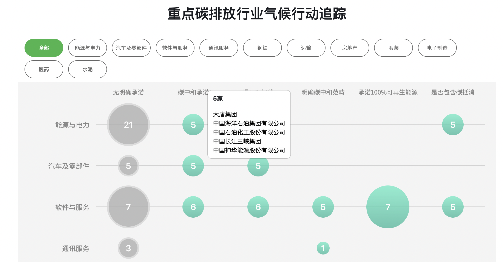

Greenpeace Internship
Greenpeace Internship
The Carbon Neutral Action Tracker website is a tool to assess Chinese corporation's progress towards zero carbon. Here is the link: https://www.greenpeace-carbon-tracker.com/
My Work
Implemented web scraping, created a database of the zero-carbon commitments and actions of 214 China’s corporations in 7 industries, and made data visualization, using Python, SQL and Tableau.
Supported dynamic web development in the contact, article displaying, and search functionality, including add, edit and delete capabilities, using Javascript, jQuery, HTML and CSS.
